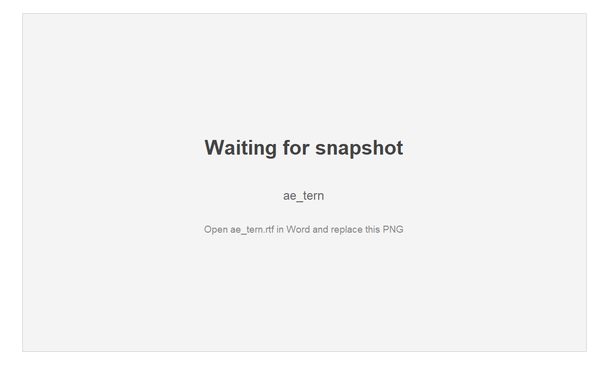
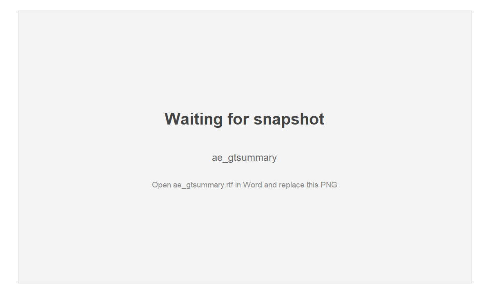
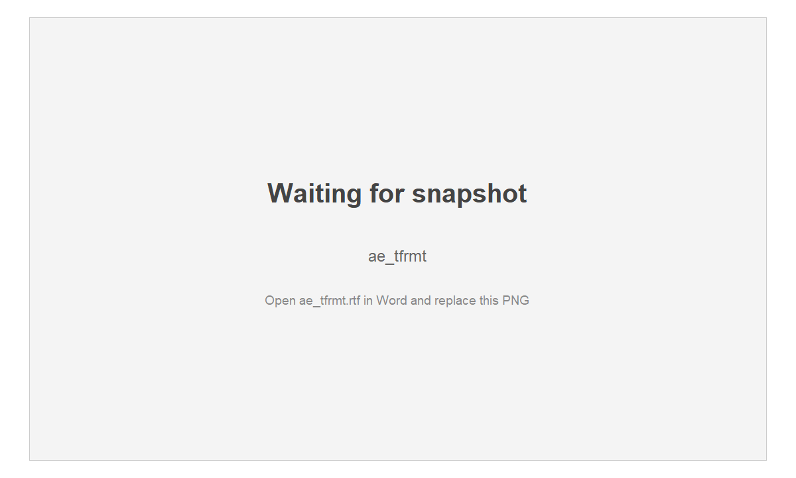
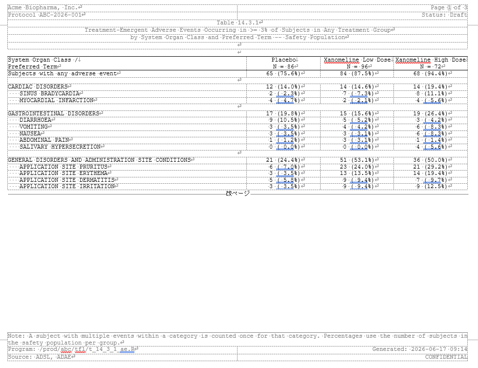

Same report, every framework: Adverse events (AE)
Source:vignettes/articles/showcase-ae.Rmd
showcase-ae.RmdThe R ecosystem for clinical tables is wonderfully diverse – rtables/tern, tfrmt, gtsummary (on its own or on a cards/cardx ARD), Tplyr, gt, flextable, huxtable – and teams pick whichever fits their style and validation story. What they all have in common is the last step: a regulatory RTF that opens cleanly in Word.
That last step is exactly what rtfreporter does, for
all of them. This article builds the same
adverse-events report from the same data with several
frameworks and renders each to RTF through rtfreporter. The
point is not that one framework is best – it is that whatever
you already use, rtfreporter is the RTF back end. Its
companion, Demographics, does the same
for a single-page demographics table; this article tackles a longer
table that rtfreporter must paginate.
Every block here is copy-paste runnable, from data creation to the written
.rtf. Run a section’s data and furniture blocks once (they prepare the data and the shared rtfreporter header / footer / column spec), then copy any single framework block: it builds that framework’s table and then calls rtfreporter directly –as_rtftables(),rtf_document(),generate_rtfreport()– to write its.rtf. (The data block also defines the sharedAE_SORTrule and PT orderings, so a framework block runs on its own once the data block has.) We render witheval = FALSEin the article itself – so pkgdown does not have to run the entire framework stack – and show the Word output as a screenshot. The committed.rtffiles are produced by running these very chunks:data-raw/showcase_ae.Rextracts them withknitr::purl()and writes them toinst/rtf-examples/showcase/– so the code you read here is the generator.
The demographics table fits on a page; a real
adverse-events table does not. This is where
rtfreporter’s pagination earns its keep: a
long System-Organ-Class / Preferred-Term table is split across pages,
and a class that straddles a page boundary has its label
repeated with (Cont.) at the top of the
next page.
We count the number of subjects with at least one
treatment-emergent AE, by treatment group, shown as
n (xx.x%):
- “Subjects with any adverse event” overall on top, then per System Organ Class (SOC), and – indented – per Preferred Term (PT).
- Each level is an independent distinct-subject count: the SOC count sits on the SOC row itself and counts a subject once even if they had several PTs in that class, so a SOC count is not the sum of its PTs.
- Limited to PTs occurring in >= 3% of subjects in any group (the overall / SOC counts are still over all TEAEs), so the table is a readable few pages.
- SOCs are listed alphabetically; within each SOC the PTs are ordered by subject count (all arms), descending, ties broken alphabetically.
The data
We use pharmaverseadam’s
adsl (for the treatment groups and their denominators) and
adae, both restricted to the three randomised arms. This
block also defines the canonical sort rule and the PT orderings/filters
that the framework blocks reuse – each commented with which
blocks use it – so that, once this block has run, any one framework
block below is self-contained.
library(rtfreporter)
library(dplyr)
arm_levels <- c("Placebo", "Xanomeline Low Dose", "Xanomeline High Dose")
adsl <- pharmaverseadam::adsl |>
filter(TRT01A %in% arm_levels) |>
mutate(TRT01A = factor(TRT01A, levels = arm_levels))
arm_n <- table(adsl$TRT01A)
# Treatment-emergent AEs only, in the same three arms.
adae <- pharmaverseadam::adae |>
filter(TRT01A %in% arm_levels, TRTEMFL == "Y") |>
mutate(TRT01A = factor(TRT01A, levels = arm_levels))
ANY_AE <- "Subjects with any adverse event"
# AE_SORT: native per-hierarchy-level sort rule -- SOCs alphanumeric, PTs by total
# distinct-subject count (all arms) descending, ties A -> Z. USED BY the
# gtsummary-family blocks: gtsummary, cards + gtsummary, and flextable / huxtable.
AE_SORT <- list(AESOC ~ "alphanumeric", AEDECOD ~ "descending")
# The next three are USED BY the transpose-and-set blocks (Tplyr and cards +
# tfrmt), which assemble the body themselves and so need the orderings as data:
# .pt_order = canonical PT order (subject count desc, ties A -> Z);
# .keep_pt = PTs kept (>= 3% of subjects in any arm);
# .soc_pt = the real SOC / PT pairs (a PT belongs to exactly one SOC).
.pt_order <- adae |> distinct(USUBJID, AEDECOD) |>
count(AEDECOD, name = "tot") |>
arrange(desc(tot), AEDECOD) |> pull(AEDECOD) |> as.character()
.keep_pt <- adae |> distinct(USUBJID, TRT01A, AEDECOD) |>
count(TRT01A, AEDECOD, name = "n") |>
mutate(p = 100 * n / as.integer(arm_n[as.character(TRT01A)])) |>
group_by(AEDECOD) |> summarise(mx = max(p), .groups = "drop") |>
filter(mx >= 3) |> pull(AEDECOD) |> as.character()
.soc_pt <- adae |> distinct(AESOC, AEDECOD) |>
mutate(across(everything(), as.character))The shared rtfreporter furniture, defined once
The running header and footer, the
Letter landscape page, the column header with the arm
Ns, the column spec and widths, and the fmt_ae() cell
formatter are the same for every framework below. We build them
once here; each framework block then references them.
Only the table body changes from framework to framework.
# Shared column header / spec / widths / page budget.
ae_col_header <- c("System Organ Class /\nPreferred Term",
paste0(arm_levels, "\nN = ", as.integer(arm_n)))
ae_col_spec <- c(
list(list(col = 1L, align = "left", header_align = "left")),
lapply(2:4, function(j) list(col = j, align = "center", header_align = "center")))
ae_widths <- c(0.52, 0.16, 0.16, 0.16)
AE_MAX_ROWS <- 16L # rows/page: small enough that a SOC is split across a page
# (so "(Cont.)" shows) and the table runs to 3 pages
# Running header and the shared footer (one footer for every framework).
ae_header <- rtf_header(rows = list(
c(l = "Acme Biopharma, Inc.", r = "Page {AUTO_PAGE} of {AUTO_TOTAL_PAGES}"),
c(l = "Protocol ABC-2026-001", r = "Status: Draft"),
c(c = "Table 14.3.1"),
c(c = "Treatment-Emergent Adverse Events Occurring in >= 3% of Subjects in Any Treatment Group"),
c(c = "by System Organ Class and Preferred Term -- Safety Population"),
c(c = "")))
ae_footer <- rtf_footer(rows = list(
c(l = "Note: A subject with multiple events within a category is counted once for that category. Percentages use the number of subjects in the safety population per group."),
c(l = "Program: /prod/abc/tfl/t_14_3_1_ae.R", r = "Generated: 2026-06-17 09:14"),
c(l = "Source: ADSL, ADAE", r = "CONFIDENTIAL")))
# fmt_ae(): cell formatter used by EVERY framework (tern included). Expand a bare
# zero "0" to "0 (0.0%)" so it lines up with the count/percent cells -- a bare "0"
# is otherwise left ragged by the aligner -- then align the column. tern's
# count_occurrences() emits bare zeros; gtsummary / tfrmt / Tplyr already emit
# "0 (0.0%)", so for them the expansion is a no-op.
fmt_ae <- function(x, nbsp = " ") {
x[trimws(x) == "0"] <- "0 (0.0%)"
fmt_count_paren_bare(x, nbsp = nbsp)
}Every framework block below ends with the same three rtfreporter steps, written out in full so nothing is hidden:
-
as_rtftables()paginates the framework’s table into a list of pages withsplit = "group_force"(max_rows = AE_MAX_ROWS), so a System Organ Class that straddles a page boundary repeats with(Cont.); -
rtf_document() |> rtf_section() |> rtf_tables()wraps the pages with the sharedae_header/ae_footeron a Letter-landscape page; -
generate_rtfreport()writes the.rtf.
Each as_rtftables() call passes
read_meta = FALSE: we supply the regulatory column header /
spec / widths (and the footer, via rtf_section())
ourselves, so a framework’s own column header – and its
{n} ({p}%) statistic footnote – are deliberately not read.
(Tplyr already hands over a plain data frame, which carries no metadata
to begin with.)
rtables / tern
tern is the pharmaverse standard for this table.
analyze_num_patients() gives the overall “any AE” row; a
SOC-level content summary (summarize_row_groups() with
child_labels = "hidden") puts each SOC’s distinct-subject
count on the SOC name row;
count_occurrences() gives the indented PT rows. We build on
the full data, prune PT rows below 3% with
rtables::prune_table(), and sort by
subject count – alphabetical factor levels plus a stable
sort_at_path() break ties A -> Z.
rtfreporter then paginates with
split = "group_force"
(max_rows per page), which is what inserts the
(Cont.) rows.
library(rtables); library(tern)
# Alphabetical factor levels so SOCs / PTs tie-break A -> Z.
adae_f <- adae |>
mutate(AESOC = factor(AESOC, levels = sort(unique(AESOC))),
AEDECOD = factor(AEDECOD, levels = sort(unique(AEDECOD))))
# Distinct subjects with any AE in a SOC, per column -- shown on the SOC row.
# Zero counts are emitted bare ("0") here and by count_occurrences() for the PT
# rows; the shared fmt_ae() later expands every "0" to "0 (0.0%)" so the column
# aligns.
soc_count <- function(df, labelstr, .N_col, ...) {
n <- length(unique(df$USUBJID))
cell <- if (n == 0L) rcell(0L, format = "xx")
else rcell(c(n, n / .N_col), format = "xx (xx.x%)")
in_rows(cell, .labels = labelstr)
}
ae <- basic_table(show_colcounts = TRUE) |>
split_cols_by("TRT01A") |>
analyze_num_patients(vars = "USUBJID", .stats = "unique",
.labels = c(unique = ANY_AE)) |>
split_rows_by("AESOC", child_labels = "hidden", nested = FALSE,
split_fun = drop_split_levels) |>
summarize_row_groups(cfun = soc_count) |> # SOC count on the SOC row
count_occurrences(vars = "AEDECOD", .indent_mods = 1L) |>
build_table(df = adae_f, alt_counts_df = adsl) |>
prune_table(keep_rows(has_fraction_in_any_col(atleast = 0.03))) |> # >= 3%
# SOCs stay alphabetical (factor order); only the PTs within each SOC are
# ordered by subject count (all arms), ties A -> Z.
sort_at_path(path = c("AESOC", "*", "AEDECOD"), scorefun = score_occurrences)
# group_force = fill each page to max_rows and repeat a split SOC with "(Cont.)"
pages <- as_rtftables(ae, read_meta = FALSE, split = "group_force", max_rows = AE_MAX_ROWS,
blank_rows = "between_groups", cell_format = fmt_ae,
col_header = ae_col_header, col_spec = ae_col_spec,
col_rel_width = ae_widths, row_height_twips = 200)
doc <- rtf_document(page = list(paper_size = "letter", orientation = "landscape")) |>
rtf_section(page = 1, secinfo = list(header = ae_header, footer = ae_footer)) |>
rtf_tables(pages)
generate_rtfreport(doc, "ae_tern.rtf", overwrite = TRUE)
The same as_rtftables() call returns a list of
pages; rtf_tables() renders them in order, and the
running header’s {AUTO_PAGE} /
{AUTO_TOTAL_PAGES} number them.
gtsummary
gtsummary::tbl_hierarchical() builds the
same table directly: overall_row = TRUE is
the any-AE row, each SOC row carries its own subject count, and PTs are
nested beneath. filter_hierarchical() keeps the >= 3%
PTs, and sort_hierarchical() puts them in the canonical
order natively – its sort takes one rule per
hierarchy level (AE_SORT, from the data block:
SOCs alphabetical, PTs by subject count, ties A -> Z). The overall
row is labelled to match tern via the native label
argument, and the shared fmt_ae() expands a zero cell to a
clean, aligned 0 (0.0%).
library(gtsummary)
tbl <- tbl_hierarchical(
data = adae, variables = c(AESOC, AEDECOD), by = TRT01A,
denominator = adsl, id = USUBJID, overall_row = TRUE,
label = list("..ard_hierarchical_overall.." ~ ANY_AE),
statistic = ~ "{n} ({p}%)", digits = everything() ~ list(p = 1)) |>
filter_hierarchical(p >= 0.03) |>
sort_hierarchical(sort = AE_SORT) # SOCs A->Z, PTs by subject count
pages <- as_rtftables(tbl, read_meta = FALSE, split = "group_force", max_rows = AE_MAX_ROWS,
blank_rows = "between_groups", cell_format = fmt_ae,
col_header = ae_col_header, col_spec = ae_col_spec,
col_rel_width = ae_widths, row_height_twips = 200)
doc <- rtf_document(page = list(paper_size = "letter", orientation = "landscape")) |>
rtf_section(page = 1, secinfo = list(header = ae_header, footer = ae_footer)) |>
rtf_tables(pages)
generate_rtfreport(doc, "ae_gtsummary.rtf", overwrite = TRUE)
cards + gtsummary
Keep
cardsandgtsummaryin step. These two packages move together: gtsummary’s hierarchical verbs (tbl_hierarchical(),tbl_ard_hierarchical(),filter_hierarchical(),sort_hierarchical()) hand their ARD tocards, andcardsvalidates its structure. A mismatched pair fails at run time withThe following columns are not present: ...raised bycards::check_ard_structure()– for example gtsummary 2.5.0 with cards 0.9.0, a combination R will happily install because that gtsummary only declaredcards (>= 0.7.1), with no upper bound. Nothing is wrong with the code below; the pair is. Update both at once (install.packages(c("cards", "gtsummary"))) – gtsummary 2.6.0 declarescards (>= 0.9.0)and the same code runs. The same applies to the cards + tfrmt section further down.
The ARD-first variant: compute the hierarchical Analysis
Results Dataset with
cards::ard_stack_hierarchical(), then summarise it with
tbl_ard_hierarchical(). tbl_ard_hierarchical()
has no overall_row argument – but the any-AE row is still
the ARD’s job, not the raw data’s: a second
ard_stack_hierarchical() with
over_variables = TRUE computes the
distinct-subject “any event” count across all the hierarchy variables,
and add_overall_row() reads it straight off that ARD (no
re-counting of adae). Ordering uses the same native
sort_hierarchical(sort = AE_SORT), so the rendered table
matches the two above cell-for-cell.
library(cards); library(gtsummary)
# add_overall_row(): used ONLY here. tbl_ard_hierarchical() has no overall_row
# argument, so we prepend the "any event" row ourselves -- generically and
# ARD-driven: the overall n / N / p are read straight off an ARD built with
# `ard_stack_hierarchical(..., over_variables = TRUE)` (the rows whose variable
# is "..ard_hierarchical_overall.."), mapped to the table's stat_* columns via
# its own header and formatted with the table's glue `statistic` template.
add_overall_row <- function(tbl, ard, label = ANY_AE,
statistic = "{n} ({p}%)", digits = 1L) {
hdr <- tbl$table_styling$header
hdr <- hdr[startsWith(hdr$column, "stat_"), ]
hdr <- hdr[order(hdr$column), ] # stat_1, stat_2, ... order
ov <- ard |>
dplyr::filter(variable == "..ard_hierarchical_overall..",
stat_name %in% c("n", "N", "p")) |>
dplyr::transmute(level = as.character(unlist(group1_level)),
stat_name, stat = unlist(stat)) |>
tidyr::pivot_wider(names_from = stat_name, values_from = stat)
cells <- vapply(hdr$modify_stat_level, function(lvl) {
r <- ov[match(lvl, ov$level), ]
glue::glue_data(list(n = r$n, N = r$N,
p = formatC(100 * r$p, format = "f", digits = digits)),
statistic)
}, character(1))
tb <- tbl$table_body
row <- tb[1, ]; row[seq_len(ncol(row))] <- NA
row$variable <- "..ard_hierarchical_overall.."
row$row_type <- "level"
row$label <- label
for (j in seq_len(nrow(hdr))) row[[hdr$column[j]]] <- cells[j]
tbl$table_body <- dplyr::bind_rows(row, tb)
# Un-indent the injected row via the public API so it lines up with the SOCs.
gtsummary::modify_indent(tbl, columns = "label",
rows = variable == "..ard_hierarchical_overall..",
indent = 0L)
}
# Hierarchical ARD for the SOC / PT body.
ard <- ard_stack_hierarchical(
data = adae, variables = c(AESOC, AEDECOD), by = TRT01A,
denominator = adsl, id = USUBJID)
# "Any event" ARD: over_variables = TRUE adds the distinct-subject overall count.
ard_any <- ard_stack_hierarchical(
data = adae, variables = c(AESOC, AEDECOD), by = TRT01A,
denominator = adsl, id = USUBJID, over_variables = TRUE)
tbl <- tbl_ard_hierarchical(
cards = ard, variables = c(AESOC, AEDECOD), by = TRT01A,
statistic = ~ "{n} ({p}%)") |>
filter_hierarchical(p >= 0.03) |>
sort_hierarchical(sort = AE_SORT) |> # SOCs A->Z, PTs by subject count (native)
add_overall_row(ard_any) # any-AE row read from the ARD, generically
pages <- as_rtftables(tbl, read_meta = FALSE, split = "group_force", max_rows = AE_MAX_ROWS,
blank_rows = "between_groups", cell_format = fmt_ae,
col_header = ae_col_header, col_spec = ae_col_spec,
col_rel_width = ae_widths, row_height_twips = 200)
doc <- rtf_document(page = list(paper_size = "letter", orientation = "landscape")) |>
rtf_section(page = 1, secinfo = list(header = ae_header, footer = ae_footer)) |>
rtf_tables(pages)
generate_rtfreport(doc, "ae_gtsummary_ard.rtf", overwrite = TRUE)The three AE tables above are the same report – same numbers, same SOC / PT order – built three different ways and all rendered by
rtfreporter.
Tplyr (transpose-and-set)
Tplyr returns formatted strings; as
with the DM table we do the transpose-and-set here – Tplyr
counts the distinct subjects, and we assemble the layout (overall row,
SOC count on the SOC row, indented PTs in subject-count order) and hand
the column header to rtfreporter via the setup block’s
ae_col_header / ae_col_spec.
library(Tplyr)
varcols <- paste0("var1_", arm_levels)
rn <- function(df) df |> dplyr::rename_with(~ arm_levels, dplyr::all_of(varcols))
# distinct-subject counts: one layer for SOC totals, one for PT-by-SOC.
soc <- tplyr_table(adae, TRT01A) |> set_pop_data(adsl) |> set_pop_treat_var(TRT01A) |>
add_layer(group_count(AESOC) |> set_distinct_by(USUBJID) |>
set_format_strings(f_str("xx (xx.x%)", distinct_n, distinct_pct))) |>
build() |> dplyr::transmute(AESOC = as.character(row_label1),
dplyr::across(dplyr::all_of(varcols))) |> rn()
pt <- tplyr_table(adae, TRT01A) |> set_pop_data(adsl) |> set_pop_treat_var(TRT01A) |>
add_layer(group_count(AEDECOD, by = vars(AESOC)) |> set_distinct_by(USUBJID) |>
set_format_strings(f_str("xx (xx.x%)", distinct_n, distinct_pct))) |>
build() |> dplyr::transmute(AESOC = as.character(row_label1),
AEDECOD = as.character(row_label2),
dplyr::across(dplyr::all_of(varcols))) |>
dplyr::semi_join(.soc_pt, by = c("AESOC", "AEDECOD")) |>
dplyr::filter(AEDECOD %in% .keep_pt) |> rn()
# Assemble `disp`: an overall any-AE row, then each SOC row (its count) and its
# PTs indented in subject-count order.
any_n <- adae |> dplyr::distinct(TRT01A, USUBJID) |> dplyr::count(TRT01A)
ov <- vapply(arm_levels, function(a) {
n <- any_n$n[match(a, as.character(any_n$TRT01A))]
sprintf("%d (%.1f%%)", n, 100 * n / as.integer(arm_n[a]))
}, character(1))
rows <- list(setNames(data.frame(ANY_AE, t(ov), check.names = FALSE,
stringsAsFactors = FALSE),
c("Characteristic", arm_levels)))
for (s in sort(unique(pt$AESOC))) {
sc <- soc |> dplyr::filter(AESOC == s)
rows[[length(rows) + 1]] <- setNames(
data.frame(s, sc[, arm_levels], check.names = FALSE, stringsAsFactors = FALSE),
c("Characteristic", arm_levels))
pts <- pt |> dplyr::filter(AESOC == s) |> dplyr::arrange(match(AEDECOD, .pt_order))
if (nrow(pts))
rows[[length(rows) + 1]] <- setNames(
data.frame(paste0(" ", pts$AEDECOD), pts[, arm_levels],
check.names = FALSE, stringsAsFactors = FALSE),
c("Characteristic", arm_levels))
}
disp <- dplyr::bind_rows(rows)
# Metadata lives HERE, in rtfreporter -- not in Tplyr.
pages <- as_rtftables(disp, col_header = ae_col_header, split = "group_force",
max_rows = AE_MAX_ROWS, blank_rows = "between_groups",
cell_format = fmt_ae, col_spec = ae_col_spec,
col_rel_width = ae_widths, row_height_twips = 200)
doc <- rtf_document(page = list(paper_size = "letter", orientation = "landscape")) |>
rtf_section(page = 1, secinfo = list(header = ae_header, footer = ae_footer)) |>
rtf_tables(pages)
generate_rtfreport(doc, "ae_tplyr.rtf", overwrite = TRUE)cards + tfrmt
tfrmt is driven by a long group / label / column
/ param / value table. The trick for an AE table is that a row
whose group equals its label
renders as a single line that also carries its statistic – so
giving each SOC a group = label = <SOC> row puts the
SOC count on the SOC row, just like the others; the PT
rows (group = SOC, label = PT) become the
indented children, and the overall row is its own one-row group. We
complete the arm x row grid so a zero is a real 0, and sort
via sorting_cols.
library(tidyr); library(tfrmt)
N <- as.integer(arm_n[arm_levels]); names(N) <- arm_levels
real_pairs <- .soc_pt |> dplyr::filter(AEDECOD %in% .keep_pt)
kept_socs <- sort(unique(real_pairs$AESOC))
# PT counts per arm, completed to a full grid so a missing cell is a real 0.
pt_c <- adae |> dplyr::distinct(TRT01A, USUBJID, AESOC, AEDECOD) |>
dplyr::count(TRT01A, AESOC, AEDECOD, name = "n") |>
dplyr::mutate(AESOC = as.character(AESOC), AEDECOD = as.character(AEDECOD)) |>
dplyr::semi_join(real_pairs, by = c("AESOC", "AEDECOD")) |>
tidyr::complete(TRT01A, tidyr::nesting(AESOC, AEDECOD), fill = list(n = 0)) |>
dplyr::mutate(p = n / N[as.character(TRT01A)])
# SOC distinct-subject counts (independent of the PTs).
soc_c <- adae |> dplyr::distinct(TRT01A, USUBJID, AESOC) |>
dplyr::count(TRT01A, AESOC, name = "n") |>
dplyr::mutate(AESOC = as.character(AESOC)) |>
dplyr::filter(AESOC %in% kept_socs) |>
tidyr::complete(TRT01A, AESOC = kept_socs, fill = list(n = 0)) |>
dplyr::mutate(p = n / N[as.character(TRT01A)])
# Overall any-AE count.
ov_c <- adae |> dplyr::distinct(TRT01A, USUBJID) |> dplyr::count(TRT01A, name = "n") |>
dplyr::mutate(p = n / N[as.character(TRT01A)])
# long form: a SOC row has group == label (count shown on the SOC line); PT rows
# are group = SOC, label = PT; the overall row is its own group. ord1 / ord2 are
# the SOC and PT sort keys.
long <- dplyr::bind_rows(
ov_c |> dplyr::transmute(group = ANY_AE, label = ANY_AE,
column = as.character(TRT01A), n, p),
soc_c |> dplyr::transmute(group = AESOC, label = AESOC,
column = as.character(TRT01A), n, p),
pt_c |> dplyr::transmute(group = AESOC, label = AEDECOD,
column = as.character(TRT01A), n, p)) |>
tidyr::pivot_longer(c(n, p), names_to = "param", values_to = "value") |>
dplyr::mutate(
ord1 = ifelse(group == ANY_AE, 0L, match(group, kept_socs)),
ord2 = ifelse(label == group, 0L, match(label, .pt_order)),
column = factor(column, levels = arm_levels),
group = factor(group, levels = c(ANY_AE, kept_socs)))
spec <- tfrmt(
group = group, label = label, column = column, param = param, value = value,
sorting_cols = c(ord1, ord2), # SOCs A->Z, PTs by count
body_plan = body_plan(frmt_structure(".default", ".default",
frmt_combine("{n} ({p}%)", n = frmt("x"),
p = frmt("x.x", transform = ~ . * 100)))),
col_plan = col_plan(group, label, Placebo, `Xanomeline Low Dose`,
`Xanomeline High Dose`, -ord1, -ord2))
pages <- as_rtftables(print_to_gt(spec, long), read_meta = FALSE, split = "group_force",
max_rows = AE_MAX_ROWS, blank_rows = "between_groups",
cell_format = fmt_ae, col_header = ae_col_header,
col_spec = ae_col_spec, col_rel_width = ae_widths,
row_height_twips = 200)
doc <- rtf_document(page = list(paper_size = "letter", orientation = "landscape")) |>
rtf_section(page = 1, secinfo = list(header = ae_header, footer = ae_footer)) |>
rtf_tables(pages)
generate_rtfreport(doc, "ae_tfrmt.rtf", overwrite = TRUE)
flextable and huxtable (convert and render)
No need to rebuild the table for these two: the gtsummary table
converts straight to a flextable or a
huxtable, and rtfreporter reads either.
(We bake the PT indent into the label text first with
bake_indent(), because the converters turn gtsummary’s
indent into cell padding that the flextable / huxtable adapters do not
read as a row-label indent.)
library(gtsummary); library(flextable); library(huxtable)
# bake_indent(): used ONLY here. as_flex_table() / as_hux_table() turn
# gtsummary's indent into cell padding that the flextable / huxtable adapters do
# not read as a row-label indent, so we bake the PT indent into the label TEXT
# (NBSP) before converting.
bake_indent <- function(tbl, n = 4L) {
tb <- tbl$table_body
pt <- tb$variable == "AEDECOD"
tb$label[pt] <- paste0(strrep(" ", n), tb$label[pt])
tbl$table_body <- tb
tbl$table_styling$indent <- tbl$table_styling$indent[0, ]
tbl
}
# The same gtsummary table as the gtsummary section above (AE_SORT is from the
# data block).
g <- tbl_hierarchical(
data = adae, variables = c(AESOC, AEDECOD), by = TRT01A,
denominator = adsl, id = USUBJID, overall_row = TRUE,
label = list("..ard_hierarchical_overall.." ~ ANY_AE),
statistic = ~ "{n} ({p}%)", digits = everything() ~ list(p = 1)) |>
filter_hierarchical(p >= 0.03) |>
sort_hierarchical(sort = AE_SORT)
# flextable
pages <- as_rtftables(gtsummary::as_flex_table(bake_indent(g)), read_meta = FALSE, split = "group_force",
max_rows = AE_MAX_ROWS, blank_rows = "between_groups",
cell_format = fmt_ae, col_header = ae_col_header,
col_spec = ae_col_spec, col_rel_width = ae_widths,
row_height_twips = 200)
doc <- rtf_document(page = list(paper_size = "letter", orientation = "landscape")) |>
rtf_section(page = 1, secinfo = list(header = ae_header, footer = ae_footer)) |>
rtf_tables(pages)
generate_rtfreport(doc, "ae_flextable.rtf", overwrite = TRUE)
# huxtable
pages <- as_rtftables(gtsummary::as_hux_table(bake_indent(g)), read_meta = FALSE, split = "group_force",
max_rows = AE_MAX_ROWS, blank_rows = "between_groups",
cell_format = fmt_ae, col_header = ae_col_header,
col_spec = ae_col_spec, col_rel_width = ae_widths,
row_height_twips = 200)
doc <- rtf_document(page = list(paper_size = "letter", orientation = "landscape")) |>
rtf_section(page = 1, secinfo = list(header = ae_header, footer = ae_footer)) |>
rtf_tables(pages)
generate_rtfreport(doc, "ae_huxtable.rtf", overwrite = TRUE)
Seven ways, one report. rtables/tern, gtsummary, cards + gtsummary, Tplyr, cards + tfrmt, and gtsummary converted to flextable / huxtable – all the same AE table, all rendered to the same paginated RTF by
rtfreporter.
Coming next, under the same showcase: real Word snapshots in place of the current placeholders.
Where next
- The pharmaverse catalog — every showcase table in one place
The four recipes (?rtfreporter-recipes) are the same
ground covered as runnable help-page examples: demographics, adverse
events, PK and laboratory, each data-in to RTF-out.